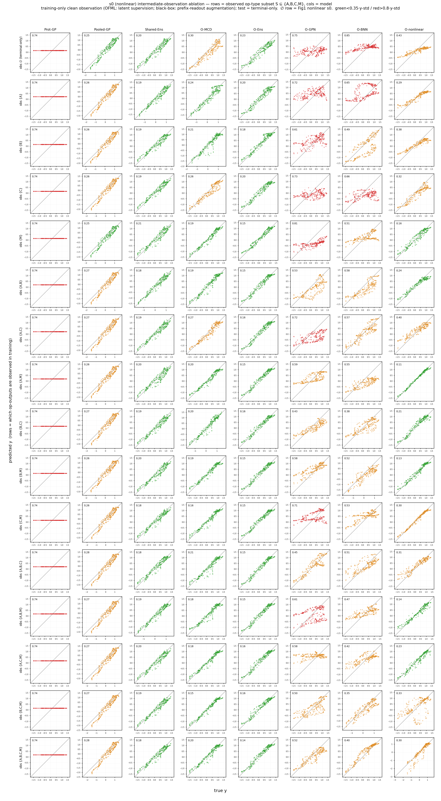

主張 1 · 中間観測は識別可能性の限界を修復する — 使えるのは合成的モデルのみ
学習中に中間状態を観測することは、terminal-only で横ばいだった非線形 \(s0\) を count 記述子の床の下まで押し下げる — そしてそれを活用できるのは合成的モデルのみである。合成 OFML は 16 の観測サブセット \(S\subseteq\{A,B,C,M\}\) を与えられると、端末のみのマクロ NRMSE 0.579 を全トレースで 0.401、単一 \(\{M\}\) 観測だけで 0.214 まで押し下げ、すべてのブラックボックスを追い抜く。一方でブラックボックスは同じ観測を prefix-readout 行として渡されても改善しない（Pooled-GP はむしろ悪化）。修復信号は演算子を潜在モジュールとして表現できる代理モデルにのみ活性であり、フラットな写像には不活性である。

terminal-only 観測では識別できない構造が、学習中に中間状態を観測することで回復できるか、そしてそれを活用できるのがどの種類のモデルかを切り分ける。本図は主張 1「中間観測は識別可能性の限界を修復する」を直接支える：非線形 \(s0\) は端末観測のみでは横ばい（マクロ NRMSE ≈0.58）で、合成 OFML も count 記述子床と同程度にとどまる。中間観測を与えると合成 OFML はすべてのブラックボックスを追い抜き、count 記述子の床の下まで NRMSE を押し下げる（OFML-nonlinear 0.579→0.401、単一 \(\{M\}\) 観測だけで 0.214）。一方でブラックボックスは同一の観測情報を prefix-readout として渡されても改善せず、修復信号が演算子を表現できる代理モデルにのみ活性であることを示す。これは 図 1 で見た terminal-only の識別限界を、観測介入で「割れるモデル／割れないモデル」に二分する。
独立変数は、学習中にその位置へ観測器（測定器モジュール）を置き真の 2 次元状態を観測する操作型の集合 \(S\subseteq\{A,B,C,M\}\)（全 \(2^4=16\) サブセット、空＝端末のみ から 完全内部トレース \(\{A,B,C,M\}\) まで）。観測はクリーン（ノイズなし）かつ学習時のみで、評価は厳密に端末読み出しのみ。各セルは 16 サブセット × 3 seed の平均。\(S=\varnothing\) は 図 1 の非線形 \(s0\)（terminal-only）を再現する。
OFML 側（合成モデル）の観測器 \(O_A,O_B,O_C,O_M\)。 被観測操作型 op ∈ S の位置に操作型ごとに別々の学習可能な観測器 \(O_{\mathrm{op}}:\mathbb{R}^d\to\mathbb{R}^2\)（バイアスなし線形）を付け、補助損失 \(\sum_{\mathrm{op}\in S}\norm{O_{\mathrm{op}}(s_{\mathrm{op}})-s^\ast_{\mathrm{op}}}^2\) を端末損失に加える。\(O_{\mathrm{op}}\) が観測するのはその操作を適用した直後の真の 2 次元状態 \(s^\ast_{\mathrm{op}}=F^{\dagger}_{\mathrm{op}}(z^{\dagger})\)（post-op・ノイズなし）— すなわち \(O_A\) は「A 適用直後の \((s_0,s_1)\)」、\(O_M\) は「M 適用直後の状態」を観測する。共有 1 枚の整列にしないのは、そのゲージ自由度（縮小的／拡大的実現の非識別）を除去し count \(C^k\) 発散を抑えるためである。
並列・非破壊の側枝。 合成の本流は潜在 \(s\leftarrow g_{\theta_{\mathrm{op}}}(s)\) を \(d\) 次元のまま伝播し、下流操作（例: B）は前段（例: A）の潜在 \(s\) そのものを受け取る。\(O_{\mathrm{op}}(s)\) はその時点の潜在を 2 次元へ写す並列の読み出しヘッドにすぎず、補助損失を与えるだけで \(s\) を書き換えない。したがって観測を入れても順伝播グラフと合成は不変で、観測は潜在への追加の勾配制約としてのみ作用する（試料を変えない非破壊測定の類似）。\(d>2\) のモデルでは潜在が観測 2 次元より多くの情報を保持し、\(O_{\mathrm{op}}\) はその \(d\to2\) 射影を学習する。
ブラックボックス側は観測器を持たない。 付随させる潜在モジュールがないため、prefix-readout 拡張で同じ情報を与える — 各被観測位置 \(t\) について、接頭辞プロトコル op₁ … op_t O の端末 readout をスカラー \(y=\mathrm{readout}(s^\ast_{\text{after }t})\) として観測する訓練行を追加する。よって \(O_A,O_B,O_C,O_M\) は OFML 専用であり、ブラックボックスは接頭辞のスカラー読み出しのみを受け取る（＝同じ観測情報の「フラットな」提示）。
※ 指標は 図 2 と統一してマクロ NRMSE（target y-std で正規化）を用いる。図 6 のヒートマップの緑（<0.35）／赤（>0.8）閾値はこの NRMSE スケールであり、旧版の生 RMSE 表示は廃止した。中間観測は学習時のみで評価は端末のみ — この非対称性（訓練介入・評価不介入）が「中間観測が学習の識別性を助ける」という主張の妥当な検証条件である。
8 代理モデルを 2 群に分ける。合成群（OFML）は操作型ごとの潜在モジュールを合成するため観測器 \(O_{\mathrm{op}}\) を装着でき、ブラックボックス群は潜在モジュールを持たず prefix-readout でしか同じ情報を受け取れない。この設計差そのものが「誰が中間観測を活用できるか」を決める。
| モデル | 群 | 構造・潜在モジュール | 中間観測の受け取り方 |
|---|---|---|---|
OFML-nonlinear | 合成 | 操作型ごとの潜在モジュール \(g_{\theta_{\mathrm{op}}}\) を合成＋非線形 readout（真の族と容量一致） | 操作ごと観測器 \(O_{\mathrm{op}}\)（並列側枝）＋潜在トレース教師損失 |
OFML-Ensemble | 合成 | 合成ネットの種のみ 5-member 深層アンサンブル | \(O_{\mathrm{op}}\) ＋ 補助損失（各メンバ） |
OFML-MCD | 合成 | MC-dropout 版合成ネット（推論時 dropout で不確実性） | \(O_{\mathrm{op}}\) ＋ 補助損失 |
OFML-BNN | 合成 | 変分ベイズ合成ネット（重み事後） | \(O_{\mathrm{op}}\) ＋ 補助損失 |
OFML-GPN | 合成 | GP 出力層付き合成ネット（潜在→GP readout） | \(O_{\mathrm{op}}\) ＋ 補助損失 |
Shared-Ens | ブラックボックス | 操作 count 記述子ベース MLP アンサンブル（順序盲・潜在モジュールなし） | prefix-readout 拡張（接頭辞スカラー行） |
Pooled-GP | ブラックボックス | 全 source/target をプールした単一 GP | prefix-readout 拡張 |
Prot-GP | ブラックボックス | プロトコル別 GP（プロトコル埋め込み） | prefix-readout 拡張 |
指標はマクロ NRMSE。target \(p\) の出力スケール \(s_p=\mathrm{std}_x f_p(x)\) で正規化し、\[ \NRMSE_p=\sqrt{\frac{\mathrm{mean}_x\,(\mu_p(x)-f_p(x))^2}{s_p^2}},\qquad \overline{\NRMSE}=\sqrt{\tfrac12\textstyle\sum_{p}\NRMSE_p^2}. \] \(\mu_p\) は端末読み出しの予測、\(f_p\) は真値（ノイズ無 test）。\(\NRMSE=1\) は「target 平均を予測」する自明ベースラインに相当し、図 6 の赤（>0.8）はこれに近い床、緑（<0.35）は識別が回復した領域を表す。報告アーキテクチャは traceablation2（count 安定性＋order 識別を組み合わせた BO で選択）。
s0 success（非線形族）を再利用する（source 9 本・target A B C M O ／ C B A M O）。加えて、学習時のみ観測する操作型の部分集合 \(S\subseteq\{A,B,C,M\}\)（全 16）を独立変数とする（評価は端末のみ）。\(S=\varnothing\) は 図 1 非線形 s0 を再現する。
| 要素 | 値 | 性質 |
|---|---|---|
| source プロトコル | 9 本（単体＋両順序ペア） | s0 success 再利用・ノイズ有 \(\sigma=0.02\) |
| target | 2 本（A B C M O ／ C B A M O） | 同数・異順序（順序盲エイリアシングを露出） |
| 中間観測 \(S\) | \(S\subseteq\{A,B,C,M\}\)、全 16 サブセット（\(\varnothing\) … \(\{A,B,C,M\}\)） | 学習時のみ・クリーン（ノイズなし） |
| 観測される真値 | \(s^\ast_{\mathrm{op}}=F^{\dagger}_{\mathrm{op}}(z^{\dagger})\)（post-op） | OFML: \(O_{\mathrm{op}}\) ／ BB: prefix-readout |
| 評価 | 端末読み出しのみ（真値） | ノイズ無（train-on-test なし） |
| 反復 | 16 サブセット × 3 seed | 各セル 3 seed 平均 |
OFML-nonlinear が容量一致）：FA=(2σ(2.4s₀−0.8s₁+0.1)−0.8, s₁)、FB=(s₀, 2σ(2.0s₁+0.7s₀−0.2)−0.8)、FC=(1.2·ss(2.2s₀+0.8s₁−1.0), 1.2·ss(2.0s₁−0.6s₀−0.6))（縮小的, Lipschitz<1）、FM=(s₀+0.4tanh(s₀−s₁), s₁+0.4tanh(s₀+s₁))、FO=id、readout y=1.4·ss(2s₀−1.6s₁+1.2s₀s₁−0.1)+0.25·sin(2π(s₀−s₁))（高周波 sin 項が既約な難易度下限）。4 変種：nonlinear_shifted(s2)/nonlinear_lipschitz(s5, 拡大的 M)/nonlinear_misspecified(s6)/nonlinear_three_body(s7, target 限定の三体項 +2.2s₀s₁+…)。モジュール型にカーソルを合わせると、共有される同一操作が全プロトコルで強調される（＝重み共有）。ウィジェットで S を選ぶと、その操作型の直後に非破壊観測器の側枝が現れる。
下表は非線形 \(s0\) の target マクロ NRMSE を、\(\varnothing\)（端末のみ）・全トレース \(\{A,B,C,M\}\)・最良サブセット（全 16 中）で対比する。\(\varnothing\) では合成 OFML はブラックボックスの count 記述子床（Shared-Ens 0.275、Pooled-GP 0.335）と同程度以上（OFML-Ens 0.317、OFML-nonlinear 0.579）にとどまる — 図 1 の terminal-only 識別限界そのものである。中間状態が観測されると、合成モデルはすべて床を割り、ブラックボックスの下限を大きく下回る（OFML-nonlinear 0.579→0.401、しかも単一 \(\{M\}\) 観測だけで 0.214 と全 16 サブセット中の最良に到達；OFML-Ens 0.317→0.195、OFML-MCD 0.410→0.267）。対照的にブラックボックスは prefix-readout 行として同一の観測を与えられても改善しない：Pooled-GP はむしろ悪化（0.335→0.374）、Prot-GP は実質横ばい（1.009→1.003）、Shared-Ens もわずか（0.275→0.250）にとどまる。
| 群 | モデル | \(\varnothing\)（端末のみ） | 全トレース \(\{A,B,C,M\}\) | 最良サブセット（\(S\)） |
|---|---|---|---|---|
| 合成 （OFML） | OFML-nonlinear | 0.579 | 0.401 | 0.214（\(\{M\}\) 単一・最良） |
| OFML-Ensemble | 0.317 | 0.195 | 0.195（\(\{A,B,C,M\}\)） | |
| OFML-MCD | 0.410 | 0.267 | 0.267（\(\{A,B,C,M\}\)） | |
| OFML-BNN | 1.154 | 0.546 | 0.546（\(\{A,B,C,M\}\)） | |
| OFML-GPN | 1.012 | 0.704 | 0.704（\(\{A,B,C,M\}\)） | |
| ブラック ボックス | Shared-Ens | 0.275 | 0.250 | 0.250（\(\{A,B,C,M\}\)） |
| Pooled-GP | 0.335 | 0.374（悪化） | 0.335（\(\varnothing\)） | |
| Prot-GP | 1.009 | 1.003（横ばい） | 1.003（\(\{A,B,C,M\}\)） |
OFML-nonlinear はミキサ \(M\) が観測されたとき最も改善する（単一 \(\{M\}\) で 0.214）。これは \(s0\) の非線形的難しさが \(M\)（クロス項 tanh(s₀±s₁)）に集中しているためで、その出力を直接観測すると潜在フレームが固定され、他の操作型を追加観測するよりも効く — 全トレース 0.401 をも下回る。すなわち中間観測は「多く観るほど良い」のではなく「識別の隘路を観る」ことが本質である。
端末観測のみでは、非線形 \(s0\) はブラックボックスの count 記述子（Shared-Ens 0.275、Pooled-GP 0.335）が床を作り、合成 OFML もそれと同程度にとどまる — 図 1 で見た terminal-only の識別限界そのものである。学習中に中間状態を観測すると、その床は合成モデルに対してのみ破られる：OFML-nonlinear は 0.579→0.401（単一 \(\{M\}\) で 0.214）、OFML-Ens は 0.317→0.195 とブラックボックスの下限を大きく下回る。決定的なのは、同一の観測情報を prefix-readout 行として与えられたブラックボックスが改善しない（Pooled-GP は悪化、Prot-GP は横ばい、Shared-Ens もわずか）ことである。つまり中間観測がもたらす識別信号は、演算子を潜在モジュールとして表現できる代理モデルにのみ活性であり、フラットな写像には不活性である。ミキサ \(M\) の観測が最も効く（単一 \(\{M\}\) 0.214）ことは、非線形的難しさが \(M\) に集中し、その出力観測が潜在フレームを固定するという機構的説明を与える。以上は主張 1を直接支える。
兄弟実験と併せて読む：中間観測がプロトコル順序の識別に効く線形版は 図 6（order・linear）、terminal-only の順方向転移そのものは 図 1、コスト指標での位置づけと能動観測は 図 2を参照。
※ 限界：中間観測は学習時のみ・クリーン（ノイズなし）という理想化であり、評価は端末のみ。実運用では中間観測にもノイズ・コストが伴う（コスト付きの能動観測は 図 2）。ブラックボックスの prefix-readout はスカラー端末読み出しの拡張であり、潜在の 2 次元状態を直接与えるわけではない — したがって「ブラックボックスが改善しない」は同一情報量ではなく同一の観測プロトコルを与えた場合の結論である。各セルは 3 seed 平均で、NRMSE は 256 test 点上の端末評価、色閾値は target y-std 正規化。
中間観測（内部 node の部分評価）は Lipschitz bridge 係数 \(\Lambda_{p_\star,q}\) と近似推論誤差 \(d_{\Delta,n}\) を改善し、深さに伴う識別限界を緩める（命題 6、補題 6）。中間観測を活用できるのが合成的モデルのみなのは、pushforward の潜在モジュール \(g_{\theta_{\mathrm{op}}}\) を持ち、観測器 \(O_{\mathrm{op}}\) をその潜在に接続できるためである（フラットな写像には接続すべき内部潜在が存在しない）。ミキサ \(M\) の単独観測が最も効くことは、bridge 係数のボトルネックが \(M\) の非線形合成に集中しているという命題 6 の depth-limit 描像と整合する。